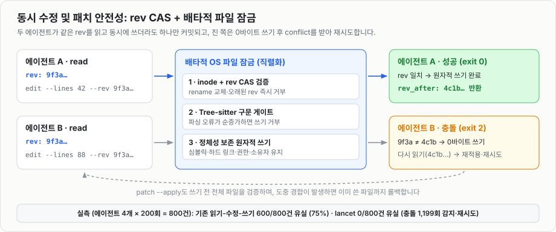

안전한 편집, 다중 구간 CAS, 패치 & 로컬 이름 변경
여러 군데를 고쳐도 줄 번호가 밀리지 않고, 여러 에이전트가 동시에 써도 덮어쓰기가 발생하지 않습니다.
줄 번호를 수동으로 계산해 sed를 여러 번 돌리거나 잠금 없이 파일을 덮어쓰면, 줄 밀림이나 에이전트 간 경합으로 변경 사항이 소리 없이 사라집니다. Lancet은 모든 쓰기를 공유 좌표계 위의 compare-and-swap(CAS)으로 처리합니다.

read가 반환하는 줄 번호와 XXH3-64 rev를 edit과 rename이 그대로 사용합니다.단일 구간 편집 (--lines, --symbol, --find)#
대상 하나(--lines, --symbol, --find 중 택1)와 연산 하나(--with, --with-file, --delete, --insert-before, --insert-after 중 택1)를 고릅니다. 기본은 디스크를 건드리지 않는 dry-run diff이며 --apply를 붙일 때만 반영됩니다.
# read에서 본 줄 번호 그대로 수정 (--rev로 CAS 검증)
lancet edit src/net.rs --lines 12:15 --with ' timeout_ms: 5000,' --rev e70d5a898f122a62 --apply
# 심볼 전체 교체 (주의: 위쪽 문서 주석과 어트리뷰트도 범위에 포함됨!)
lancet edit src/net.rs --symbol retry_limit --with-file new_fn.rs --rev <REV> --apply
# 고유 문자열 치환 (LF/CRLF 모두 매치; 전체 치환은 --all 추가)
lancet edit src/net.rs --find 'let retries = 3;' --with 'let retries = 5;' --rev <REV> --applyedit --symbol은 read --symbol이 보여 주는 것과 똑같이 선언 바로 위의 /// 문서 주석과 #[attr] 어트리뷰트까지 포함합니다. 유지하려면 새 내용에 함께 넣으세요.
원자적 다중 구간 편집 (--edits)#
한 파일에서 여러 곳을 고칠 때는 절대 줄 번호 기반 호출을 따로 이어 붙이지 말고, 하나의 --edits JSON 배열(파일 또는 stdin -)로 묶어 보내세요. 모든 항목은 처음 읽은 원본 파일의 줄 번호를 쓰며, 겹침이 있으면 거절되고 전부 성공하거나 한 줄도 쓰지 않습니다.
lancet edit src/net.rs --rev e70d5a898f122a62 --apply --edits - <<'JSON'
[
{"lines": "10:12", "with": "const RETRIES: u32 = 5;"},
{"symbol": "legacy_helper", "delete": true},
{"find": "old_metric(", "with": "new_metric(", "all": true},
{"lines": "40", "insert_after": " tracing::info!(\"updated\");"}
]
JSON멀티 에이전트 동시성과 conflict 복구#

inode와 rev를 재검증하며, 낡은 리비전은 conflict(종료 2)를 내고 1바이트도 쓰지 않습니다.- 읽고
rev보관:lancet read file --json에서rev를 얻습니다. --rev로 반영: 그사이 다른 에이전트가 먼저 쓰면status: "conflict"(종료 코드2)로 거절됩니다.- 연쇄 적용 또는 복구: 성공 시 반환된
rev_after를 다음 편집에 넘깁니다.conflict가 나면lancet read로 최신 내용을 다시 읽고 새rev로 재시도하세요. 충돌을 피하려고--rev를 빼고 덮어쓰면 안 됩니다.
- 구문 게이트:
edit,patch,ast --rewrite는 Tree-sitter 구문 오류가 순증가하는 수정을 거부합니다(이미 망가진 파일을 단계적으로 고치는 것은 허용). 의도적인 경우에만--allow-syntax-errors를 쓰세요. - 파일 정체성: 심볼릭 링크는 대상 파일에 기록해 링크를 유지하고, 다중 하드 링크 파일은 제자리 갱신하며 권한·소유자를 보존합니다.
다중 파일 Unified Diff 적용 (lancet patch)#
lancet patch는 git diff 또는 diff -u를 여러 파일에 걸쳐 원자적으로 적용합니다.
# Dry-run 사전 검증
lancet patch changes.diff
# stdin으로 받아 하위 디렉터리에 적용 (-p 1이 기본으로 a/, b/ 제거)
git diff | lancet patch --root subdir -p 1 --apply이름 변경(git diff -M), 권한 변경(chmod +x), 빈 파일 생성·삭제를 처리합니다. 모든 hunk는 정확히 일치해야 하며(줄 위치가 밀렸을 때는 고유한 최근접 정확 일치 위치로만 재배치, 퍼지 매칭 안 함), 전체 파일을 사전 검증한 뒤 쓰기 경합 발생 시 이전 파일까지 롤백합니다. 바이너리 diff와 복사는 거부합니다.
스코프 증명 기반 로컬 이름 변경 (lancet rename)#
lancet rename은 한 파일 내부의 지역 바인딩(변수, 루프 변수, 클로저 매개변수, Python 제외 함수 매개변수)을 6개 언어(Rust, Python, JavaScript, TypeScript, TSX, Go)에서 안전하게 바꿉니다.
# 해당 줄에 OLD 이름의 바인딩이 하나뿐이면 COL 생략 가능
lancet rename src/search.rs:42 old_name new_name
lancet rename src/search.rs:42:9 old_name new_name --rev <REV> --apply로컬 스코프만으로 안전성을 증명할 수 없으면 추측하지 않고 거절합니다: 모듈/최상위·외부 노출 심볼, 구조체 필드, 메서드, Python 함수 매개변수(다른 파일에서 키워드 인자로 호출 가능), 매크로 내부, JSX 태그 이름, Go 구조체 리터럴 키, 동적 스코프(eval/with/locals()/global/nonlocal), 그리고 변경 후 스코프를 재해석했을 때 섀도잉이나 변수 캡처가 발생하는 경우.
스코프 내 주석의 언급은 건드리지 않고 comment_mentions 횟수로 보고합니다. 파일 간 또는 최상위 심볼 변경은 lancet refs로 위치를 찾은 뒤 lancet edit --edits나 LSP를 쓰세요.